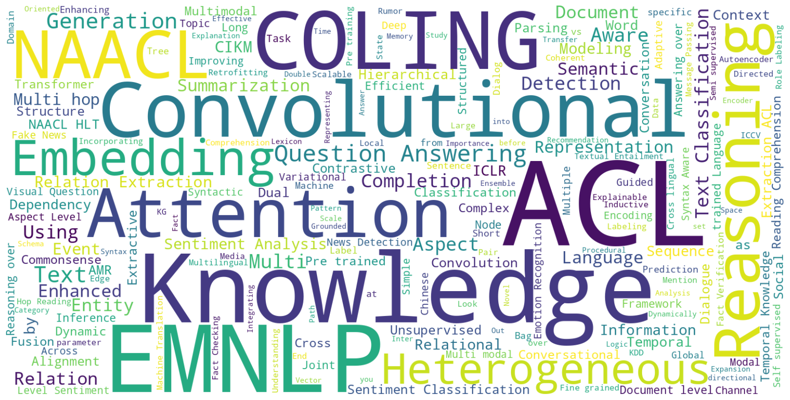

GNN4NLP Papers
A list of recent papers about GNN methods applied in NLP areas.
Word Cloud of Paper Titles

Abnormal Text Detection
-
Abusive Language Detection with Graph Convolutional Networks. Pushkar Mishra, Marco Del Tredici, Helen Yannakoudakis and Ekaterina Shutova. NAACL-HLT 2019. [pdf]
-
Encoding Social Information with Graph Convolutional Networks for Political Perspective Detection in News Media. Chang Li and Dan Goldwasser. ACL 2019 [pdf]
-
Spam Review Detection with Graph Convolutional Networks. Ao Li, Zhou Qin, Runshi Liu, Yiqun Yang, Dong Li. CIKM 2019 [pdf]
-
Look before you Hop: Conversational Question Answering over Knowledge Graphs Using Judicious Context Expansion. Philipp Christmann, Rishiraj Saha Roy, Abdalghani Abujabal, Jyotsna Singh, Gerhard Weikum. CIKM 2019 [pdf]
-
GCAN: Graph-aware Co-Attention Networks for Explainable Fake News Detection on Social Media. Yi-Ju Lu, Cheng-Te Li. ACL 2020 [pdf]
-
Tackling Fake News Detection by Continually Improving Social Context Representations using Graph Neural Networks. Nikhil Mehta, Maria Pacheco and Dan Goldwasser. ACL 2022 [pdf]
Dialogue
-
Dynamic Schema Graph Fusion Network for Multi-Domain Dialogue State Tracking. Yue Feng, Aldo Lipani, Fanghua Ye, Qiang Zhang and Emine Yilmaz. ACL 2022 [pdf]
-
HeterMPC: A Heterogeneous Graph Neural Network for Response Generation in Multi-Party Conversations. Jia-Chen Gu, Chao-Hong Tan, Chongyang Tao, Zhen-Hua Ling, Huang Hu, Xiubo Geng and Daxin Jiang. ACL 2022 [pdf]
-
Control Globally, Understand Locally: A Global-to-Local Hierarchical Graph Network for Emotional Support Conversation. Wei Peng, Yue Hu, Luxi Xing, Yuqiang Xie, Yajing Sun, Yunpeng Li. IJCAI 2022 [pdf]
Fundamental NLP Tasks
-
Incorporating Syntactic and Semantic Information in Word Embeddings using Graph Convolutional Networks. Shikhar Vashishth, Manik Bhandari, Prateek Yadav, Piyush Rai, Chiranjib Bhattacharyya and Partha Talukdar. ACL 2019 [pdf] [code]
-
A Lexicon-Based Graph Neural Network for Chinese NER. Tao Gui, Yicheng Zou and Qi Zhang. EMNLP 2019 [pdf]
-
Look Again at the Syntax: Relational Graph Convolutional Network for Gendered Ambiguous Pronoun Resolution. Yinchuan Xu, Junlin Yang. GBNLP@ACL 2019 [pdf] [code]
-
Enhancing Chinese Pre-trained Language Model via Heterogeneous Linguistics Graph. Yanzeng Li, Jiangxia Cao, Xin Cong, Zhenyu Zhang, Bowen Yu, Hongsong Zhu and Tingwen Liu. ACL 2022 [pdf]
-
Learning from Sibling Mentions with Scalable Graph Inference in Fine-Grained Entity Typing. Yi Chen, Jiayang Cheng, Haiyun Jiang, Lemao Liu, Haisong Zhang, Shuming Shi and Ruifeng Xu. ACL 2022 [pdf]
-
Variational Graph Autoencoding as Cheap Supervision for AMR Coreference Resolution. Irene Li, Linfeng Song, Kun Xu and Dong Yu. ACL 2022 [pdf]
-
Graph Pre-training for AMR Parsing and Generation. Xuefeng Bai, Yulong Chen and Yue Zhang. ACL 2022 [pdf]
-
Using Context-to-Vector with Graph Retrofitting to Improve Word Embeddings. Jiangbin Zheng, Yile Wang, Ge Wang, Jun Xia, Yufei Huang, Guojiang Zhao, Yue Zhang and Stan Li. ACL 2022 [pdf]
Information Extraction
-
Long-tail Relation Extraction via Knowledge Graph Embeddings and Graph Convolution Networks. Ningyu Zhang, Shumin Deng, Zhanlin Sun, Guanying Wang, Xi Chen, Wei Zhang and Huajun Chen. NAACL-HLT 2019. [pdf]
-
Attention Guided Graph Convolutional Networks for Relation Extraction. Zhijiang Guo, Yan Zhang and Wei Lu. ACL 2019 [pdf] [code]
-
Graph Neural Networks with Generated Parameters for Relation Extraction. Hao Zhu, Yankai Lin, Zhiyuan Liu, Jie Fu, Tat-seng Chua and Maosong Sun. ACL 2019 [pdf]
-
GraphRel: Modeling Text as Relational Graphs for Joint Entity and Relation Extraction. Tsu-Jui Fu, Peng-Hsuan Li and Wei-Yun Ma. ACL 2019 [pdf] [code]
-
Enhanced Multi-Channel Graph Convolutional Network for Aspect Sentiment Triplet Extraction. Hao Chen, Zepeng Zhai, Fangxiang Feng, Ruifan Li and Xiaojie Wang. ACL 2022 [pdf]
Knowledge Graph
-
Estimating Node Importance in Knowledge Graphs Using Graph Neural Networks. Namyong Park, Andrey Kan, Xin Luna Dong, Tong Zhao and Christos Faloutsos. KDD 2019 [pdf]
-
Hashing Graph Convolution for Node Classification. Wenting Zhao, Zhen Cui, Chunyan Xu, Chengzheng Li, Tong Zhang，Jian Yang. CIKM 2019 [pdf]
-
Multilingual Knowledge Graph Completion with Self-Supervised Adaptive Graph Alignment. Zijie Huang, Zheng Li, Haoming Jiang, Tianyu Cao, Hanqing Lu, Bing Yin, Karthik Subbian, Yizhou Sun and Wei Wang. ACL 2022 [pdf]
-
Efficient Hyper-parameter Search for Knowledge Graph Embedding. Yongqi Zhang, Zhanke Zhou, Quanming Yao and Yong Li. ACL 2022 [pdf]
-
CAKE: A Scalable Commonsense-Aware Framework For Multi-View Knowledge Graph Completion. Guanglin Niu, Bo Li, Yongfei Zhang and Shiliang Pu. ACL 2022 [pdf]
-
SimKGC: Simple Contrastive Knowledge Graph Completion with Pre-trained Language Models. Liang Wang, Wei Zhao, Zhuoyu Wei and Jingming Liu. ACL 2022 [pdf]
-
RotateQVS: Representing Temporal Information as Rotations in Quaternion Vector Space for Temporal Knowledge Graph Completion. Kai Chen, Ye Wang, Yitong Li and Aiping Li. ACL 2022 [pdf]
-
Complex Evolutional Pattern Learning for Temporal Knowledge Graph Reasoning. Zixuan Li, Saiping Guan, Xiaolong Jin, Weihua Peng, Yajuan Lyu, Yong Zhu, Long Bai, Wei Li, Jiafeng Guo and Xueqi Cheng. ACL 2022 [pdf]
LLM and Graph
-
Relation-Aware Equivariant Graph Networks for Epitope-Unknown Antibody Design and Specificity Optimization. Yiduo Chen, et al. ArXiv 2025 [pdf]
-
Reasoning on Graphs: Faithful and Interpretable Large Language Model Reasoning. Linyao Yang, Hongyang Chen, Zhao Li, Xiao Ding, Xindong Wu. AAAI 2024 [pdf]
-
GraphWiz: An Instruction-Following Language Model for Graph Problems. Zhiqiang Zhu, Weiqing Wang, Zhenhua Dong, Hao Tian, Yinan Wu, Haomian Li. ACL 2024 [pdf]
-
Mitigating Large Language Model Hallucinations via Autonomous Knowledge Graph-based Retrofitting. Hao Peng, Xinyan Xiao, et al. NAACL 2024 [pdf]
-
Retrieve-Rewrite-Answer: A KG-to-Text Enhanced LLMs Framework for Knowledge Graph Question Answering. Zhongwei Wan, et al. EMNLP 2024 [pdf]
Question Answering
-
BAG: Bi-directional Attention Entity Graph Convolutional Network for Multi-hop Reasoning Question Answering. Yu Cao, Meng Fang and Dacheng Tao. NAACL-HLT 2019. [pdf] [code]
-
Question Answering by Reasoning Across Documents with Graph Convolutional Networks. Nicola De Cao, Wilker Aziz and Ivan Titov. NAACL-HLT 2019. [pdf]
-
Cognitive Graph for Multi-Hop Reading Comprehension at Scale. Ming Ding, Chang Zhou, Qibin Chen, Hongxia Yang and Jie Tang. ACL 2019 [pdf] [code]
-
Dynamically Fused Graph Network for Multi-hop Reasoning. Yunxuan Xiao, Yanru Qu, Lin Qiu, Hao Zhou, Lei Li, Weinan Zhang and Yong Yu. ACL 2019 [pdf]
-
Multi-hop Reading Comprehension across Multiple Documents by Reasoning over Heterogeneous Graphs. Ming Tu, Guangtao Wang, Jing Huang, Yun Tang, Xiaodong He and Bowen Zhou. ACL 2019 [pdf]
-
DialogueGCN A Graph Convolutional Neural Network for Emotion Recognition in Conversation. Deepanway Ghosal, Navonil Majumder, Soujanya Poria, Niyati Chhaya and Alexander Gelbukh. EMNLP 2019 [pdf]
-
GEAR: Graph-based Evidence Aggregating and Reasoning for Fact Verification. Jie Zhou, Xu Han, Cheng Yang, Zhiyuan Liu, Lifeng Wang, Changcheng Li and Maosong Sun. ACL 2019 [pdf] [code]
-
Reasoning Over Semantic-Level Graph for Fact Checking. Wanjun Zhong, Jingjing Xu, Duyu Tang, Zenan Xu, Nan Duan, Ming Zhou, Jiahai Wang and Jian Yin. Arxiv 2019 [pdf]
-
Message Passing for Complex Question Answering over Knowledge Graphs. Svitlana Vakulenko, Javier David Fernandez Garcia, Axel Polleres, Maarten de Rijke, Michael Cochez. CIKM 2019 [pdf]
-
Knowledge-aware Textual Entailment with Graph Atention Network. Daoyuan Chen , Yaliang Li , Min Yang , Hai-Tao Zheng , Ying Shen. CIKM 2019 [pdf]
-
Fine-grained Fact Verification with Kernel Graph Attention Network. Zhenghao Liu, Chenyan Xiong, Maosong Sun, Zhiyuan Liu. ACL 2020 [pdf] [code]
-
Sequence-to-Sequence Knowledge Graph Completion and Question Answering. Apoorv Saxena, Adrian Kochsiek and Rainer Gemulla. ACL 2022 [pdf]
-
KG-FiD: Infusing Knowledge Graph in Fusion-in-Decoder for Open-Domain Question Answering. Donghan Yu, Chenguang Zhu, Yuwei Fang, Wenhao Yu, Shuohang Wang, Yichong Xu, Xiang Ren, Yiming Yang and Michael Zeng. ACL 2022 [pdf]
-
AdaLoGN: Adaptive Logic Graph Network for Reasoning-Based Machine Reading Comprehension. Xiao Li, Gong Cheng, Ziheng Chen, Yawei Sun and Yuzhong Qu. ACL 2022 [pdf]
Sentiment Analysis
-
Aspect-based Sentiment Classification with Aspect-specific Graph Convolutional Networks. Chen Zhang, Qiuchi Li and Dawei Song. EMNLP 2019 [pdf] [code]
-
Effective Token Graph Modeling using a Novel Labeling Strategy for Structured Sentiment Analysis. Wenxuan Shi, Fei Li, Jingye Li, Hao Fei and Donghong Ji. ACL 2022 [pdf]
-
Syntax-Aware Aspect Level Sentiment Classification with Graph Attention Networks. Binxuan Huang and Kathleen M. Carley. EMNLP 2019 [pdf]
-
Relational Graph Attention Network for Aspect-based Sentiment Analysis. Kai Wang, Weizhou Shen, Yunyi Yang, Xiaojun Quan, Rui Wang. ACL 2020 [pdf]
-
Syntax-Aware Graph Attention Network for Aspect-Level Sentiment Classification. Lianzhe Huang, Xin Sun, Sujian Li, Linhao Zhang and Houfeng Wang. COLING 2020 [pdf]
-
Graph Ensemble Learning over Multiple Dependency Trees for Aspect-level Sentiment Classification. Xiaochen Hou, Peng Qi, Guangtao Wang, Rex Ying, Jing Huang, Xiaodong He and Bowen Zhou. NAACL 2021 [pdf]
Text Classification
-
Heterogeneous Graph Attention Networks for Semi-supervised Short Text Classification. Linmei Hu, Tianchi Yang, Chuan Shi, Houye Ji, Xiaoli Li. EMNLP 2019 [pdf]
-
Improving Out-of-Scope Detection in Intent Classification by Using Embeddings of the Word Graph Space of the Classes. Paulo Cavalin, Victor Henrique Alves Ribeiro, Ana Appel and Claudio Pinhanez. EMNLP 2020 [pdf]
-
Text Graph Transformer for Document Classification. Haopeng Zhang and Jiawei Zhang. EMNLP 2020 [pdf]
-
Few-Shot Text Classification with Edge-Labeling Graph Neural Network-Based Prototypical Network. Chen Lyu, Weijie Liu and Ping Wang. COLING 2020 [pdf]
-
Inductive Topic Variational Graph Auto-Encoder for Text Classification. Qianqian Xie, Jimin Huang, Pan Du, Min Peng and Jian-Yun Nie. NAACL 2021 [pdf]
-
Label-Specific Dual Graph Neural Network for Multi-Label Text Classification. Qianwen Ma, Chunyuan Yuan, Wei Zhou and Songlin Hu. ACL 2021 [pdf]
-
Cross-lingual Text Classification with Heterogeneous Graph Neural Network. Ziyun Wang, Xuan Liu, Peiji Yang, Shixing Liu and Zhisheng Wang. ACL 2021 [pdf]
-
Weakly-supervised Text Classification Based on Keyword Graph. Lu Zhang, Jiandong Ding, Yi Xu, Yingyao Liu and Shuigeng Zhou. EMNLP 2021 [pdf]
-
Hierarchical Heterogeneous Graph Representation Learning for Short Text Classification. Yaqing Wang, Song Wang, Quanming Yao and Dejing Dou. EMNLP 2021 [pdf]
-
Deep Attention Diffusion Graph Neural Networks for Text Classification. Yonghao Liu, Renchu Guan, Fausto Giunchiglia, Yanchun Liang and Xiaoyue Feng. EMNLP 2021 [pdf]
-
Bag-of-Words vs. Graph vs. Sequence in Text Classification: Questioning the Necessity of Text-Graphs and the Surprising Strength of a Wide MLP. Lukas Galke and Ansgar Scherp. ACL 2022 [pdf]
-
Entailment Graph Learning with Textual Entailment and Soft Transitivity. Zhibin Chen, Yansong Feng and Dongyan Zhao. ACL 2022 [pdf]
Text Generation
-
Text Generation from Knowledge Graphs with Graph Transformers. Rik Koncel-Kedziorski, Dhanush Bekal, Yi Luan, Mirella Lapata and Hannaneh Hajishirzi. NAACL-HLT 2019. [pdf] [code]
-
Coherent Comment Generation for Chinese Articles with a Graph-to-Sequence Model. Wei Li, Jingjing Xu, Yancheng He, Shengli Yan, Yunfang Wu and Xu Sun. ACL 2019 [pdf] [code]
-
Enhancing AMR-to-Text Generation with Dual Graph Representations. Leonardo F. R. Ribeiro, Claire Gardent and Iryna Gurevych. EMNLP 2019 [pdf]
-
Heterogeneous Graph Neural Networks for Extractive Document Summarization. Danqing Wang, Pengfei Liu, Yining Zheng, Xipeng Qiu, Xuanjing Huang. ACL 2020 [pdf] [code]
-
Explanation Graph Generation via Pre-trained Language Models: An Empirical Study with Contrastive Learning. Swarnadeep Saha, Prateek Yadav and Mohit Bansal. ACL 2022 [pdf]
-
Graph Enhanced Contrastive Learning for Radiology Findings Summarization. Jinpeng Hu, Zhuo Li, Zhihong Chen, Zhen Li, Xiang Wan and Tsung-Hui Chang. ACL 2022 [pdf]
Theory
-
HetGNN: Heterogeneous Graph Neural Network. Chuxu Zhang, Dongjin Song, Chao Huang, Ananthram Swami and Nitesh V. Chawla. KDD 2019 [pdf]
-
GMNN: Graph Markov Neural Networks. Meng Qu, Yoshua Bengio and Jian Tang. ICML 2019 [pdf] [code]
-
Unsupervised Dependency Graph Network. Yikang Shen, Shawn Tan, Alessandro Sordoni, Peng Li, Jie Zhou and Aaron Courville. ACL 2022 [pdf]
Visual Question Answering
-
Relation-Aware Graph Attention Network for Visual Question Answering. Linjie Li, Zhe Gan, Yu Cheng and Jingjing Liu. ICCV 2019 [pdf]
-
Language-Conditioned Graph Networks for Relational Reasoning. Ronghang Hu, Anna Rohrbach, Trevor Darrell and Kate Saenko. ICCV 2019 [pdf] [code]
-
Textbook Question Answering with Multi-modal Context Graph Understanding and Self-supervised Open-set Comprehension. Daesik Kim, Seonhoon Kim and Nojun Kwak. ACL 2019 [pdf]
-
Aligned Dual Channel Graph Convolutional Network for Visual Question Answering. Qingbao Huang, Jielong Wei, Yi Cai, Changmeng Zheng, Junying Chen, Ho-fung Leung, Qing Li. ACL 2020 [pdf]
-
Multimodal Neural Graph Memory Networks for Visual Question Answering. Mahmoud Khademi. ACL 2020 [pdf]
-
Modeling Temporal-Modal Entity Graph for Procedural Multimodal Machine Comprehension. Huibin Zhang, Zhengkun Zhang, Yao Zhang, Jun Wang, Yufan Li, Ning Jiang, Xin Wei and Zhenglu Yang. ACL 2022 [pdf]
-
Multi-Modal Sarcasm Detection via Cross-Modal Graph Convolutional Network. Bin Liang, Chenwei Lou, Xiang Li, Min Yang, Lin Gui, Yulan He, Wenjie Pei and Ruifeng Xu. ACL 2022 [pdf]
ACL
2024
- GraphWiz: An Instruction-Following Language Model for Graph Problems. Zhiqiang Zhu, Weiqing Wang, Zhenhua Dong, Hao Tian, Yinan Wu, Haomian Li. ACL 2024 [pdf]
2022
- Dynamic Schema Graph Fusion Network for Multi-Domain Dialogue State Tracking. Yue Feng, Aldo Lipani, Fanghua Ye, Qiang Zhang and Emine Yilmaz. ACL 2022 [pdf]
- Multilingual Knowledge Graph Completion with Self-Supervised Adaptive Graph Alignment. Zijie Huang, Zheng Li, Haoming Jiang, Tianyu Cao, Hanqing Lu, Bing Yin, Karthik Subbian, Yizhou Sun and Wei Wang. ACL 2022 [pdf]
- Modeling Temporal-Modal Entity Graph for Procedural Multimodal Machine Comprehension. Huibin Zhang, Zhengkun Zhang, Yao Zhang, Jun Wang, Yufan Li, Ning Jiang, Xin Wei and Zhenglu Yang. ACL 2022 [pdf]
- Explanation Graph Generation via Pre-trained Language Models: An Empirical Study with Contrastive Learning. Swarnadeep Saha, Prateek Yadav and Mohit Bansal. ACL 2022 [pdf]
- Tackling Fake News Detection by Continually Improving Social Context Representations using Graph Neural Networks. Nikhil Mehta, Maria Pacheco and Dan Goldwasser. ACL 2022 [pdf]
- Multi-Modal Sarcasm Detection via Cross-Modal Graph Convolutional Network. Bin Liang, Chenwei Lou, Xiang Li, Min Yang, Lin Gui, Yulan He, Wenjie Pei and Ruifeng Xu. ACL 2022 [pdf]
- Enhancing Chinese Pre-trained Language Model via Heterogeneous Linguistics Graph. Yanzeng Li, Jiangxia Cao, Xin Cong, Zhenyu Zhang, Bowen Yu, Hongsong Zhu and Tingwen Liu. ACL 2022 [pdf]
- Learning from Sibling Mentions with Scalable Graph Inference in Fine-Grained Entity Typing. Yi Chen, Jiayang Cheng, Haiyun Jiang, Lemao Liu, Haisong Zhang, Shuming Shi and Ruifeng Xu. ACL 2022 [pdf]
- Efficient Hyper-parameter Search for Knowledge Graph Embedding. Yongqi Zhang, Zhanke Zhou, Quanming Yao and Yong Li. ACL 2022 [pdf]
- Variational Graph Autoencoding as Cheap Supervision for AMR Coreference Resolution. Irene Li, Linfeng Song, Kun Xu and Dong Yu. ACL 2022 [pdf]
- Sequence-to-Sequence Knowledge Graph Completion and Question Answering. Apoorv Saxena, Adrian Kochsiek and Rainer Gemulla. ACL 2022 [pdf]
- CAKE: A Scalable Commonsense-Aware Framework For Multi-View Knowledge Graph Completion. Guanglin Niu, Bo Li, Yongfei Zhang and Shiliang Pu. ACL 2022 [pdf]
- Enhanced Multi-Channel Graph Convolutional Network for Aspect Sentiment Triplet Extraction. Hao Chen, Zepeng Zhai, Fangxiang Feng, Ruifan Li and Xiaojie Wang. ACL 2022 [pdf]
- Bag-of-Words vs. Graph vs. Sequence in Text Classification: Questioning the Necessity of Text-Graphs and the Surprising Strength of a Wide MLP. Lukas Galke and Ansgar Scherp. ACL 2022 [pdf]
- Effective Token Graph Modeling using a Novel Labeling Strategy for Structured Sentiment Analysis. Wenxuan Shi, Fei Li, Jingye Li, Hao Fei and Donghong Ji. ACL 2022 [pdf]
- SimKGC: Simple Contrastive Knowledge Graph Completion with Pre-trained Language Models. Liang Wang, Wei Zhao, Zhuoyu Wei and Jingming Liu. ACL 2022 [pdf]
- Graph Enhanced Contrastive Learning for Radiology Findings Summarization. Jinpeng Hu, Zhuo Li, Zhihong Chen, Zhen Li, Xiang Wan and Tsung-Hui Chang. ACL 2022 [pdf]
- Unsupervised Dependency Graph Network. Yikang Shen, Shawn Tan, Alessandro Sordoni, Peng Li, Jie Zhou and Aaron Courville. ACL 2022 [pdf]
- KG-FiD: Infusing Knowledge Graph in Fusion-in-Decoder for Open-Domain Question Answering. Donghan Yu, Chenguang Zhu, Yuwei Fang, Wenhao Yu, Shuohang Wang, Yichong Xu, Xiang Ren, Yiming Yang and Michael Zeng. ACL 2022 [pdf]
- HeterMPC: A Heterogeneous Graph Neural Network for Response Generation in Multi-Party Conversations. Jia-Chen Gu, Chao-Hong Tan, Chongyang Tao, Zhen-Hua Ling, Huang Hu, Xiubo Geng and Daxin Jiang. ACL 2022 [pdf]
- RotateQVS: Representing Temporal Information as Rotations in Quaternion Vector Space for Temporal Knowledge Graph Completion. Kai Chen, Ye Wang, Yitong Li and Aiping Li. ACL 2022 [pdf]
- Entailment Graph Learning with Textual Entailment and Soft Transitivity. Zhibin Chen, Yansong Feng and Dongyan Zhao. ACL 2022 [pdf]
- Graph Pre-training for AMR Parsing and Generation. Xuefeng Bai, Yulong Chen and Yue Zhang. ACL 2022 [pdf]
- AdaLoGN: Adaptive Logic Graph Network for Reasoning-Based Machine Reading Comprehension. Xiao Li, Gong Cheng, Ziheng Chen, Yawei Sun and Yuzhong Qu. ACL 2022 [pdf]
- Using Context-to-Vector with Graph Retrofitting to Improve Word Embeddings. Jiangbin Zheng, Yile Wang, Ge Wang, Jun Xia, Yufei Huang, Guojiang Zhao, Yue Zhang and Stan Li. ACL 2022 [pdf]
- Complex Evolutional Pattern Learning for Temporal Knowledge Graph Reasoning. Zixuan Li, Saiping Guan, Xiaolong Jin, Weihua Peng, Yajuan Lyu, Yong Zhu, Long Bai, Wei Li, Jiafeng Guo and Xueqi Cheng. ACL 2022 [pdf]
- CogKGE: A Knowledge Graph Embedding Toolkit and Benchmark for Representing Multi-source and Heterogeneous Knowledge. Zhuoran Jin, Tianyi Men, Hongbang Yuan, Zhitao He, Dianbo Sui, Chenhao Wang, Zhipeng Xue, Yubo Chen and Jun Zhao. ACL Demo 2022 [pdf]
- MMEKG: Multi-modal Event Knowledge Graph towards Universal Representation across Modalities. Yubo Ma, Zehao Wang, Mukai Li, Yixin Cao, Meiqi Chen, Xinze Li, Wenqi Sun, Kunquan Deng, Kun Wang, Aixin Sun and Jing Shao. ACL Demo 2022 [pdf]
2021
- Multimodal Sentiment Detection Based on Multi-channel Graph Neural Networks. Xiaocui Yang, Shi Feng, Yifei Zhang and Daling Wang. ACL 2021 [pdf]
- SocAoG: Incremental Graph Parsing for Social Relation Inference in Dialogues. Liang Qiu, Yuan Liang, Yizhou Zhao, Pan Lu, Baolin Peng, Zhou Yu, Ying Nian Wu and Song-Chun Zhu. ACL 2021 [pdf]
- CitationIE: Leveraging the Citation Graph for Scientific Information Extraction. Vijay Viswanathan, Graham Neubig and Pengfei Liu. ACL 2021 [pdf]
- Compare to The Knowledge: Graph Neural Fake News Detection with External Knowledge. Linmei Hu, Tianchi Yang, Luhao Zhang, Wanjun Zhong, Duyu Tang, Chuan Shi, Nan Duan and Ming Zhou. ACL 2021 [pdf]
- Directed Acyclic Graph Network for Conversational Emotion Recognition. Weizhou Shen, Siyue Wu, Yunyi Yang and Xiaojun Quan. ACL 2021 [pdf]
- Discovering Dialog Structure Graph for Coherent Dialog Generation. Jun Xu, Zeyang Lei, Haifeng Wang, Zheng-Yu Niu, Hua Wu and Wanxiang Che. ACL 2021 [pdf]
- Bird’s Eye: Probing for Linguistic Graph Structures with a Simple Information-Theoretic Approach. Yifan Hou and Mrinmaya Sachan. ACL 2021 [pdf]
- Poisoning Knowledge Graph Embeddings via Relation Inference Patterns. Peru Bhardwaj, John Kelleher, Luca Costabello and Declan O’Sullivan. ACL 2021 [pdf]
- ExCAR: Event Graph Knowledge Enhanced Explainable Causal Reasoning. Li Du, Xiao Ding, Kai Xiong, Ting Liu and Bing Qin. ACL 2021 [pdf]
- LGESQL: Line Graph Enhanced Text-to-SQL Model with Mixed Local and Non-Local Relations. Ruisheng Cao, Lu Chen, Zhi Chen, Yanbin Zhao, Su Zhu and Kai Yu. ACL 2021 [pdf]
- Learning Syntactic Dense Embedding with Correlation Graph for Automatic Readability Assessment. Xinying Qiu, Yuan Chen, Hanwu Chen, Jian-Yun Nie, Yuming Shen and Dawei Lu. ACL 2021 [pdf]
- Position Bias Mitigation: A Knowledge-Aware Graph Model for Emotion Cause Extraction. Hanqi Yan, Lin Gui, Gabriele Pergola and Yulan He. ACL 2021 [pdf]
- Structured Sentiment Analysis as Dependency Graph Parsing. Jeremy Barnes, Robin Kurtz, Stephan Oepen, Lilja Øvrelid and Erik Velldal. ACL 2021 [pdf]
- Towards Propagation Uncertainty: Edge-enhanced Bayesian Graph Convolutional Networks for Rumor Detection. Lingwei Wei, Dou Hu, Wei Zhou, Zhaojuan Yue and Songlin Hu. ACL 2021 [pdf]
- Label-Specific Dual Graph Neural Network for Multi-Label Text Classification. Qianwen Ma, Chunyuan Yuan, Wei Zhou and Songlin Hu. ACL 2021 [pdf]
- ABCD: A Graph Framework to Convert Complex Sentences to a Covering Set of Simple Sentences. Yanjun Gao, Ting-Hao Huang and Rebecca J. Passonneau. ACL 2021 [pdf]
- Psycholinguistic Tripartite Graph Network for Personality Detection. Tao Yang, Feifan Yang, Haolan Ouyang and Xiaojun Quan. ACL 2021 [pdf]
- PairRE: Knowledge Graph Embeddings via Paired Relation Vectors. Linlin Chao, Jianshan He, Taifeng Wang and Wei Chu. ACL 2021 [pdf]
- Dependency-driven Relation Extraction with Attentive Graph Convolutional Networks. Yuanhe Tian, Guimin Chen, Yan Song and Xiang Wan. ACL 2021 [pdf]
- How Knowledge Graph and Attention Help? A Qualitative Analysis into Bag-level Relation Extraction. Zikun Hu, Yixin Cao, Lifu Huang and Tat-Seng Chua. ACL 2021 [pdf]
- Reasoning over Entity-Action-Location Graph for Procedural Text Understanding. Hao Huang, Xiubo Geng, Jian Pei, Guodong Long and Daxin Jiang. ACL 2021 [pdf]
- Learning Event Graph Knowledge for Abductive Reasoning. Li Du, Xiao Ding, Ting Liu and Bing Qin. ACL 2021 [pdf]
- Unified Interpretation of Softmax Cross-Entropy and Negative Sampling: With Case Study for Knowledge Graph Embedding. Hidetaka Kamigaito and Katsuhiko Hayashi. ACL 2021 [pdf]
- MMGCN: Multimodal Fusion via Deep Graph Convolution Network for Emotion Recognition in Conversation. Jingwen Hu, Yuchen Liu, Jinming Zhao and Qin Jin. ACL 2021 [pdf]
- BASS: Boosting Abstractive Summarization with Unified Semantic Graph. Wenhao Wu, Wei Li, Xinyan Xiao, Jiachen Liu, Ziqiang Cao, Sujian Li, Hua Wu and Haifeng Wang. ACL 2021 [pdf]
- Dual Graph Convolutional Networks for Aspect-based Sentiment Analysis. Ruifan Li, Hao Chen, Fangxiang Feng, Zhanyu Ma, Xiaojie Wang and Eduard Hovy. ACL 2021 [pdf]
- Multi-hop Graph Convolutional Network with High-order Chebyshev Approximation for Text Reasoning. Shuoran Jiang, Qingcai Chen, Xin Liu, Baotian Hu and Lisai Zhang. ACL 2021 [pdf]
- Space Efficient Context Encoding for Non-Task-Oriented Dialogue Generation with Graph Attention Transformer. Fabian Galetzka, Jewgeni Rose, David Schlangen and Jens Lehmann. ACL 2021 [pdf]
- Cross-lingual Text Classification with Heterogeneous Graph Neural Network. Ziyun Wang, Xuan Liu, Peiji Yang, Shixing Liu and Zhisheng Wang. ACL 2021 [pdf]
- Efficient Text-based Reinforcement Learning by Jointly Leveraging State and Commonsense Graph Representations. Keerthiram Murugesan, Mattia Atzeni, Pavan Kapanipathi, Kartik Talamadupula, Mrinmaya Sachan and Murray Campbell. ACL 2021 [pdf]
- Explicitly Capturing Relations between Entity Mentions via Graph Neural Networks for Domain-specific Named Entity Recognition. Pei Chen, Haibo Ding, Jun Araki and Ruihong Huang. ACL 2021 [pdf]
- Unsupervised Cross-Domain Prerequisite Chain Learning using Variational Graph Autoencoders. Irene Li, Vanessa Yan, Tianxiao Li, Rihao Qu and Dragomir Radev. ACL 2021 [pdf]
2020
- Fine-grained Fact Verification with Kernel Graph Attention Network. Zhenghao Liu, Chenyan Xiong, Maosong Sun, Zhiyuan Liu. ACL 2020 [pdf] [code]
- GCAN: Graph-aware Co-Attention Networks for Explainable Fake News Detection on Social Media. Yi-Ju Lu, Cheng-Te Li. ACL 2020 [pdf]
- Heterogeneous Graph Neural Networks for Extractive Document Summarization. Danqing Wang, Pengfei Liu, Yining Zheng, Xipeng Qiu, Xuanjing Huang. ACL 2020 [pdf] [code]
- Relational Graph Attention Network for Aspect-based Sentiment Analysis. Kai Wang, Weizhou Shen, Yunyi Yang, Xiaojun Quan, Rui Wang. ACL 2020 [pdf] [code]
- Every Document Owns Its Structure: Inductive Text Classification via Graph Neural Networks. Yufeng Zhang∗ , Xueli Yu∗ , Zeyu Cui , Shu Wu, Zhongzhen Wen and Liang Wang. ACL 2020 [pdf] [code]
- Integrating Semantic and Structural Information with Graph Convolutional Network for Controversy Detection. Lei Zhong, Juan Cao, Qiang Sheng, Junbo Guo, Ziang Wang. ACL 2020 [pdf] [code]
- Line Graph Enhanced AMR-to-Text Generation with Mix-Order Graph Attention Networks. Yanbin Zhao, Lu Chen, Zhi Chen, Ruisheng Cao, Su Zhu, Kai Yu. ACL 2020 [pdf] [code]
- Query Graph Generation for Answering Multi-hop Complex Questions from Knowledge Bases. Yunshi Lan, Jing Jiang. ACL 2020 [pdf] [code]
- Semantic Graphs for Generating Deep Questions. Liangming Pan, Yuxi Xie, Yansong Feng, Tat-Seng Chua, Min-Yen Kan. ACL 2020 [pdf] [code]
- Conversational Graph Grounded Policy Learning for Open-Domain Conversation Generation. Jun Xu, Haifeng Wang, Zheng-Yu Niu, Hua Wu, Wanxiang Che , Ting Liu. ACL 2020 [pdf]
- Grounded Conversation Generation as Guided Traverses in Commonsense Knowledge Graphs. Houyu Zhang, Zhenghao Liu, Chenyan Xiong, Zhiyuan Liu. ACL 2020 [pdf] [code]
- A Novel Graph-based Multi-modal Fusion Encoder for Neural Machine Translation. Yongjing Yin, Fandong Meng, Jinsong Su, Chulun Zhou, Zhengyuan Yang, Jie Zhou, Jiebo Luo. ACL 2020 [pdf] [code]
- Syntax-Aware Opinion Role Labeling with Dependency Graph Convolutional Networks. Bo Zhang, Yue Zhang, Rui Wang, Zhenghua Li, Min Zhang. ACL 2020 [pdf]
- A Graph-based Coarse-to-fine Method for Unsupervised Bilingual Lexicon Induction. Shuo Ren, Shujie Liu, Ming Zhou, Shuai Ma. ACL 2020 [pdf]
- Graph Neural News Recommendation with Unsupervised Preference Disentanglement. Linmei Hu, Siyong Xu, Chen Li, Cheng Yang, Chuan Shi, Nan Duan, Xing Xie, Ming Zhou. ACL 2020 [pdf]
- Knowledge Graph-Augmented Abstractive Summarization with Semantic-Driven Cloze Reward. Luyang Huang, Lingfei Wu and Lu Wang. ACL 2020 [pdf] [code]
- Entity-Aware Dependency-Based Deep Graph Attention Network for Comparative Preference Classification. Nianzu Ma, Sahisnu Mazumder, Hao Wang, Bing Liu. ACL 2020 [pdf]
- LogicalFactChecker: Leveraging Logical Operations for Fact Checking with Graph Module Network. Wanjun Zhong , Duyu Tang, Zhangyin Feng , Nan Duan, Ming Zhou, Ming Gong, Linjun Shou, Daxin Jiang, Jiahai Wang and Jian Yin. ACL 2020 [pdf] [code]
- Reasoning Over Semantic-Level Graph for Fact Checking. Wanjun Zhong, Jingjing Xu, Duyu Tang, Zenan Xu, Nan Duan, Ming Zhou, Jiahai Wang and Jian Yin. ACL 2020 [pdf]
- Document Modeling with Graph Attention Networks for Multi-grained Machine Reading Comprehension. Bo Zheng, Haoyang Wen, Yaobo Liang, Nan Duan, Wanxiang Che, Daxin Jiang, Ming Zhou and Ting Liu. ACL 2020 [pdf] [code]
- Heterogeneous Graph Transformer for Graph-to-Sequence Learning. Shaowei Yao, Tianming Wang, Xiaojun Wan. ACL 2020 [pdf] [code]
- Aligned Dual Channel Graph Convolutional Network for Visual Question Answering. Qingbao Huang, Jielong Wei, Yi Cai, Changmeng Zheng, Junying Chen, Ho-fung Leung, Qing Li. ACL 2020 [pdf]
- Multimodal Neural Graph Memory Networks for Visual Question Answering. Mahmoud Khademi. ACL 2020 [pdf]
2019
- Attention Guided Graph Convolutional Networks for Relation Extraction. Zhijiang Guo, Yan Zhang and Wei Lu. ACL 2019 [pdf] [code]
- GEAR: Graph-based Evidence Aggregating and Reasoning for Fact Verification. Jie Zhou, Xu Han, Cheng Yang, Zhiyuan Liu, Lifeng Wang, Changcheng Li and Maosong Sun. ACL 2019 [pdf] [code]
- Cognitive Graph for Multi-Hop Reading Comprehension at Scale. Ming Ding, Chang Zhou, Qibin Chen, Hongxia Yang and Jie Tang. ACL 2019 [pdf] [code]
- Coherent Comment Generation for Chinese Articles with a Graph-to-Sequence Model. Wei Li, Jingjing Xu, Yancheng He, Shengli Yan, Yunfang Wu and Xu Sun. ACL 2019 [pdf] [code]
- Dynamically Fused Graph Network for Multi-hop Reasoning. Yunxuan Xiao, Yanru Qu, Lin Qiu, Hao Zhou, Lei Li, Weinan Zhang and Yong Yu. ACL 2019 [pdf]
- Encoding Social Information with Graph Convolutional Networks for Political Perspective Detection in News Media. Chang Li and Dan Goldwasser. ACL 2019 [pdf]
- Graph Neural Networks with Generated Parameters for Relation Extraction. Hao Zhu, Yankai Lin, Zhiyuan Liu, Jie Fu, Tat-seng Chua and Maosong Sun. ACL 2019 [pdf]
- Incorporating Syntactic and Semantic Information in Word Embeddings using Graph Convolutional Networks. Shikhar Vashishth, Manik Bhandari, Prateek Yadav, Piyush Rai, Chiranjib Bhattacharyya and Partha Talukdar. ACL 2019 [pdf] [code]
- GraphRel: Modeling Text as Relational Graphs for Joint Entity and Relation Extraction. Tsu-Jui Fu, Peng-Hsuan Li and Wei-Yun Ma. ACL 2019 [pdf] [code]
- Multi-hop Reading Comprehension across Multiple Documents by Reasoning over Heterogeneous Graphs. Ming Tu, Guangtao Wang, Jing Huang, Yun Tang, Xiaodong He and Bowen Zhou. ACL 2019 [pdf]
- Textbook Question Answering with Multi-modal Context Graph Understanding and Self-supervised Open-set Comprehension. Daesik Kim, Seonhoon Kim and Nojun Kwak. ACL 2019 [pdf]
- Look Again at the Syntax: Relational Graph Convolutional Network for Gendered Ambiguous Pronoun Resolution. Yinchuan Xu, Junlin Yang. GBNLP@ACL 2019 [pdf] [code]
CIKM
2019
- Spam Review Detection with Graph Convolutional Networks. Ao Li, Zhou Qin, Runshi Liu, Yiqun Yang, Dong Li. CIKM 2019 [pdf]
- Fi-GNN: Modeling Feature Interactions via Graph Neural Networks for CTR Prediction. Zekun Li, Zeyu Cui, Shu Wu, Xiaoyu Zhang, Liang Wang. CIKM 2019 [pdf] [code]
- Message Passing for Complex Question Answering over Knowledge Graphs. Svitlana Vakulenko, Javier David Fernandez Garcia, Axel Polleres, Maarten de Rijke, Michael Cochez. CIKM 2019 [pdf]
- Knowledge-aware Textual Entailment with Graph Atention Network. Daoyuan Chen , Yaliang Li , Min Yang , Hai-Tao Zheng , Ying Shen. CIKM 2019 [pdf]
- Look before you Hop: Conversational Question Answering over Knowledge Graphs Using Judicious Context Expansion. Philipp Christmann, Rishiraj Saha Roy, Abdalghani Abujabal, Jyotsna Singh, Gerhard Weikum. CIKM 2019 [pdf]
- Cross-domain Aspect Category Transfer and Detection via Traceable Heterogeneous Graph Representation Learning. Zhuoren Jiang, Jian Wang, Lujun Zhao, Changlong Sun, Yao Lu, Xiaozhong Liu. CIKM 2019 [pdf]
- Relation-Aware Graph Convolutional Networks for Agent-Initiated Social E-Commerce Recommendation. Fengli Xu , Jianxun Lian , Zhenyu Han , Yong Li , Yujian Xu , Xing Xie. CIKM 2019 [pdf]
- Hashing Graph Convolution for Node Classification. Wenting Zhao, Zhen Cui, Chunyan Xu, Chengzheng Li, Tong Zhang，Jian Yang. CIKM 2019 [pdf]
- Gravity-Inspired Graph Autoencoders for Directed Link Prediction. Guillaume Salha, Stratis Limnios, Romain Hennequin, Viet Anh Tran, Michalis Vazirgiannis. CIKM 2019 [pdf]
- Multiple Rumor Source Detection with Graph Convolutional Networks. Ming Dong, Bolong Zheng, Nguyen Quoc Viet Hung, Han Su, Guohui Li. CIKM 2019 [pdf]
COLING
2022
- TopKG: Target-oriented Dialog via Global Planning on Knowledge Graph. Zhitong Yang, Bo Wang, Jinfeng Zhou, Yue Tan, Dongming Zhao, Kun Huang, Ruifang He and Yuexian Hou. COLING 2022 [pdf]
- Hierarchical Information Matters: Text Classification via Tree Based Graph Neural Network. Chong Zhang, He Zhu, Xingyu Peng, Junran Wu and Ke Xu. COLING 2022 [pdf]
- ConTextING: Granting Document-Wise Contextual Embeddings to Graph Neural Networks for Inductive Text Classification. Yen-Hao Huang, Yi-Hsin Chen and Yi-Shin Chen. COLING 2022 [pdf]
- Dynamic Relevance Graph Network for Knowledge-Aware Question Answering. Chen Zheng and Parisa Kordjamshidi. COLING 2022 [pdf]
- Semantic Structure Based Query Graph Prediction for Question Answering over Knowledge Graph. Mingchen Li and Shihao Ji. COLING 2022 [pdf]
- Event Detection with Dual Relational Graph Attention Networks. Jiaxin Mi, Po Hu and Peng Li. COLING 2022 [pdf]
- ERGO: Event Relational Graph Transformer for Document-level Event Causality Identification. Meiqi Chen, Yixin Cao, Kunquan Deng, Mukai Li, Kun Wang, Jing Shao and Yan Zhang. COLING 2022 [pdf]
- Doc-GCN: Heterogeneous Graph Convolutional Networks for Document Layout Analysis. Siwen Luo, Yihao Ding, Siqu Long, Josiah Poon and Soyeon Caren Han. COLING 2022 [pdf]
- Transparent Semantic Parsing with Universal Dependencies Using Graph Transformations. Wessel Poelman, Rik van Noord and Johan Bos. COLING 2022 [pdf]
- GraDA: Graph Generative Data Augmentation for Commonsense Reasoning. Adyasha Maharana and Mohit Bansal. COLING 2022 [pdf]
- Topology Imbalance and Relation Inauthenticity Aware Hierarchical Graph Attention Networks for Fake News Detection. Li Gao, Lingyun Song, Jie Liu, Bolin Chen and Xuequn Shang. COLING 2022 [pdf]
- Multi-level Community-awareness Graph Neural Networks for Neural Machine Translation. Binh Nguyen, Long Nguyen and Dien Dinh. COLING 2022 [pdf]
- Multi Graph Neural Network for Extractive Long Document Summarization. Xuan-Dung Doan, Le-Minh Nguyen and Khac-Hoai Nam Bui. COLING 2022 [pdf]
- A Survey of Automatic Text Summarization Using Graph Neural Networks. Marco Ferdinand Salchner and Adam Jatowt. COLING 2022 [pdf]
- HeterGraphLongSum: Heterogeneous Graph Neural Network with Passage Aggregation for Extractive Long Document Summarization. Tuan-Anh Phan, Ngoc-Dung Ngoc Nguyen and Khac-Hoai Nam Bui. COLING 2022 [pdf]
- GRETEL: Graph Contrastive Topic Enhanced Language Model for Long Document Extractive Summarization. Qianqian Xie, Jimin Huang, Tulika Saha and Sophia Ananiadou. COLING 2022 [pdf]
- Social Bot-Aware Graph Neural Network for Early Rumor Detection. Zhen Huang, Zhilong Lv, Xiaoyun Han, Binyang Li, Menglong Lu and Dongsheng Li. COLING 2022 [pdf]
- Composition-based Heterogeneous Graph Multi-channel Attention Network for Multi-aspect Multi-sentiment Classification. Hao Niu, Yun Xiong, Jian Gao, Zhongchen Miao, Xiaosu Wang, Hongrun Ren, Yao Zhang and Yangyong Zhu. COLING 2022 [pdf]
- Learnable Dependency-based Double Graph Structure for Aspect-based Sentiment Analysis. Yinglong Ma and Yunhe Pang. COLING 2022 [pdf]
- Modeling Intra- and Inter-Modal Relations: Hierarchical Graph Contrastive Learning for Multimodal Sentiment Analysis. Zijie Lin, Bin Liang, Yunfei Long, Yixue Dang, Min Yang, Min Zhang and Ruifeng Xu. COLING 2022 [pdf]
2020
- A Graph Representation of Semi-structured Data for Web Question Answering. Xingyao Zhang, Linjun Shou, Jian Pei, Ming Gong, Lijie Wen and Daxin Jiang. COLING 2020 [pdf]
- Jointly Learning Aspect-Focused and Inter-Aspect Relations with Graph Convolutional Networks for Aspect Sentiment Analysis. Bin Liang, Rongdi Yin, Lin Gui, Jiachen Du and Ruifeng Xu. COLING 2020 [pdf]
- End-to-End Emotion-Cause Pair Extraction with Graph Convolutional Network. Ying Chen, Wenjun Hou, Shoushan Li, Caicong Wu and Xiaoqiang Zhang. COLING 2020 [pdf]
- Joint Aspect Extraction and Sentiment Analysis with Directional Graph Convolutional Networks. Guimin Chen, Yuanhe Tian and Yan Song. COLING 2020 [pdf]
- Heterogeneous Graph Neural Networks to Predict What Happen Next. Jianming Zheng, Fei Cai, Yanxiang Ling and Honghui Chen. COLING 2020 [pdf]
- Improving Abstractive Dialogue Summarization with Graph Structures and Topic Words. Lulu Zhao, Weiran Xu and Jun Guo. COLING 2020 [pdf]
- AprilE: Attention with Pseudo Residual Connection for Knowledge Graph Embedding. Yuzhang Liu, Peng Wang, Yingtai Li, Yizhan Shao and Zhongkai Xu. COLING 2020 [pdf]
- Knowledge Graph Embeddings in Geometric Algebras. Chengjin Xu, Mojtaba Nayyeri, Yung-Yu Chen and Jens Lehmann. COLING 2020 [pdf]
- Exploiting Node Content for Multiview Graph Convolutional Network and Adversarial Regularization. Qiuhao Lu, Nisansa de Silva, Dejing Dou, Thien Huu Nguyen, Prithviraj Sen, Berthold Reinwald and Yunyao Li. COLING 2020 [pdf]
- RatE: Relation-Adaptive Translating Embedding for Knowledge Graph Completion. Hao Huang, Guodong Long, Tao Shen, Jing Jiang and Chengqi Zhang. COLING 2020 [pdf]
- Syntax-Aware Graph Attention Network for Aspect-Level Sentiment Classification. Lianzhe Huang, Xin Sun, Sujian Li, Linhao Zhang and Houfeng Wang. COLING 2020 [pdf]
- Aspect-Category based Sentiment Analysis with Hierarchical Graph Convolutional Network. Hongjie Cai, Yaofeng Tu, Xiangsheng Zhou, Jianfei Yu and Rui Xia. COLING 2020 [pdf]
- A High Precision Pipeline for Financial Knowledge Graph Construction. Sarah Elhammadi, Laks V.S. Lakshmanan, Raymond Ng, Michael Simpson, Baoxing Huai, Zhefeng Wang and Lanjun Wang. COLING 2020 [pdf]
- R-VGAE: Relational-variational Graph Autoencoder for Unsupervised Prerequisite Chain Learning. Irene Li, Alexander Fabbri, Swapnil Hingmire and Dragomir Radev. COLING 2020 [pdf]
- Knowledge Graph Embedding with Atrous Convolution and Residual Learning. Feiliang Ren, Juchen Li, Huihui Zhang, Shilei Liu, Bochao Li, Ruicheng Ming and Yujia Bai. COLING 2020 [pdf]
- Graph Enhanced Dual Attention Network for Document-Level Relation Extraction. Bo Li, Wei Ye, Zhonghao Sheng, Rui Xie, Xiangyu Xi and Shikun Zhang. COLING 2020 [pdf]
- TeRo: A Time-aware Knowledge Graph Embedding via Temporal Rotation. Chengjin Xu, Mojtaba Nayyeri, Fouad Alkhoury, Hamed Shariat Yazdi and Jens Lehmann. COLING 2020 [pdf]
- Document-level Relation Extraction with Dual-tier Heterogeneous Graph. Zhenyu Zhang, Bowen Yu, Xiaobo Shu, Tingwen Liu, Hengzhu Tang, Wang Yubin and Li Guo. COLING 2020 [pdf]
- Unsupervised Fact Checking by Counter-Weighted Positive and Negative Evidential Paths in A Knowledge Graph. Jiseong Kim and Key-sun Choi. COLING 2020 [pdf]
- Multi-Task Learning for Knowledge Graph Completion with Pre-trained Language Models. Bosung Kim, Taesuk Hong, Youngjoong Ko and Jungyun Seo. COLING 2020 [pdf]
- Visual-Textual Alignment for Graph Inference in Visual Dialog. Tianling Jiang, Yi Ji, Chunping Liu and Hailin Shao. COLING 2020 [pdf]
- I Know What You Asked: Graph Path Learning using AMR for Commonsense Reasoning. Jungwoo Lim, Dongsuk Oh, Yoonna Jang, Kisu Yang and Heuiseok Lim. COLING 2020 [pdf]
- Modelling Long-distance Node Relations for KBQA with Global Dynamic Graph. Xu Wang, Shuai Zhao, Jiale Han, Bo Cheng, Hao Yang, Jianchang Ao and Zhenzi Li. COLING 2020 [pdf]
- Automated Graph Generation at Sentence Level for Reading Comprehension Based on Conceptual Graphs. Wan-Hsuan Lin and Chun-Shien Lu. COLING 2020 [pdf]
- Syntactic Graph Convolutional Network for Spoken Language Understanding. Keqing He, Shuyu Lei, Yushu Yang, Huixing Jiang and Zhongyuan Wang. COLING 2020 [pdf]
- Summarize before Aggregate: A Global-to-local Heterogeneous Graph Inference Network for Conversational Emotion Recognition. Dongming Sheng, Dong Wang, Ying Shen, Haitao Zheng and Haozhuang Liu. COLING 2020 [pdf]
- Integrating User History into Heterogeneous Graph for Dialogue Act Recognition. Dong Wang, Ziran Li, Haitao Zheng and Ying Shen. COLING 2020 [pdf]
- Knowledge Graph Enhanced Neural Machine Translation via Multi-task Learning on Sub-entity Granularity. Yang Zhao, Lu Xiang, Junnan Zhu, Jiajun Zhang, Yu Zhou and Chengqing Zong. COLING 2020 [pdf]
- Semi-supervised URL Segmentation with Recurrent Neural Networks Pre-trained on Knowledge Graph Entities. Hao Zhang, Jae Ro and Richard Sproat. COLING 2020 [pdf]
- Global Context-enhanced Graph Convolutional Networks for Document-level Relation Extraction. Huiwei Zhou, Yibin Xu, Weihong Yao, Zhe Liu, Chengkun Lang and Haibin Jiang. COLING 2020 [pdf]
- Enhancing Extractive Text Summarization with Topic-Aware Graph Neural Networks. Peng Cui, Le Hu and Yuanchao Liu. COLING 2020 [pdf]
- Few-Shot Text Classification with Edge-Labeling Graph Neural Network-Based Prototypical Network. Chen Lyu, Weijie Liu and Ping Wang. COLING 2020 [pdf]
- Fact-level Extractive Summarization with Hierarchical Graph Mask on BERT. Ruifeng Yuan, Zili Wang and Wenjie Li. COLING 2020 [pdf]
- A Contextual Alignment Enhanced Cross Graph Attention Network for Cross-lingual Entity Alignment. Zhiwen Xie, Runjie Zhu, Kunsong Zhao, Jin Liu, Guangyou Zhou and Jimmy Xiangji Huang. COLING 2020 [pdf]
- Graph Convolution over Multiple Dependency Sub-graphs for Relation Extraction. Angrosh Mandya, Danushka Bollegala and Frans Coenen. COLING 2020 [pdf]
EMNLP
2024
- Retrieve-Rewrite-Answer: A KG-to-Text Enhanced LLMs Framework for Knowledge Graph Question Answering. Zhongwei Wan, et al. EMNLP 2024 [pdf]
2021
- Multiplex Graph Neural Network for Extractive Text Summarization. Baoyu Jing, Zeyu You, Tao Yang, Wei Fan and Hanghang Tong. EMNLP 2021 [pdf]
- Beta Distribution Guided Aspect-aware Graph for Aspect Category Sentiment Analysis with Affective Knowledge. Bin Liang, Hang Su, Rongdi Yin, Lin Gui, Min Yang, Qin Zhao, Xiaoqi Yu and Ruifeng Xu. EMNLP 2021 [pdf]
- Graph Based Network with Contextualized Representations of Turns in Dialogue. Bongseok Lee and Yong Suk Choi. EMNLP 2021 [pdf]
- Extend, don’t rebuild: Phrasing conditional graph modification as autoregressive sequence labelling. Leon Weber, Jannes Münchmeyer, Samuele Garda and Ulf Leser. EMNLP 2021 [pdf]
- CR-Walker: Tree-Structured Graph Reasoning and Dialog Acts for Conversational Recommendation. Wenchang Ma, Ryuichi Takanobu and Minlie Huang. EMNLP 2021 [pdf]
- CSAGN: Conversational Structure Aware Graph Network for Conversational Semantic Role Labeling. Han Wu, Kun Xu and Linqi Song. EMNLP 2021 [pdf]
- Building the Directed Semantic Graph for Coherent Long Text Generation. Ziao Wang, Xiaofeng Zhang and Hongwei Du. EMNLP 2021 [pdf]
- Heterogeneous Graph Neural Networks for Keyphrase Generation. Jiacheng Ye, Ruijian Cai, Tao Gui and Qi Zhang. EMNLP 2021 [pdf]
- Weakly-supervised Text Classification Based on Keyword Graph. Lu Zhang, Jiandong Ding, Yi Xu, Yingyao Liu and Shuigeng Zhou. EMNLP 2021 [pdf]
- Hierarchical Heterogeneous Graph Representation Learning for Short Text Classification. Yaqing Wang, Song Wang, Quanming Yao and Dejing Dou. EMNLP 2021 [pdf]
- GraphMR: Graph Neural Network for Mathematical Reasoning. Weijie Feng, Binbin Liu, Dongpeng Xu, Qilong Zheng and Yun Xu. EMNLP 2021 [pdf]
- Argument Pair Extraction with Mutual Guidance and Inter-sentence Relation Graph. Jianzhu Bao, Bin Liang, Jingyi Sun, Yice Zhang, Min Yang and Ruifeng Xu. EMNLP 2021 [pdf]
- Event Graph based Sentence Fusion. Ruifeng Yuan, Zili Wang and Wenjie Li. EMNLP 2021 [pdf]
- TransferNet: An Effective and Transparent Framework for Multi-hop Question Answering over Relation Graph. Jiaxin Shi, Shulin Cao, Lei Hou, Juanzi Li and Hanwang Zhang. EMNLP 2021 [pdf]
- The Future is not One-dimensional: Complex Event Schema Induction by Graph Modeling for Event Prediction. Manling Li, Sha Li, Zhenhailong Wang, Lifu Huang, Kyunghyun Cho, Heng Ji, Jiawei Han and Clare Voss. EMNLP 2021 [pdf]
- Timeline Summarization based on Event Graph Compression via Time-Aware Optimal Transport. Manling Li, Tengfei Ma, Mo Yu, Lingfei Wu, Tian Gao, Heng Ji and Kathleen McKeown. EMNLP 2021 [pdf]
- ExplaGraphs: An Explanation Graph Generation Task for Structured Commonsense Reasoning. Swarnadeep Saha, Prateek Yadav, Lisa Bauer and Mohit Bansal. EMNLP 2021 [pdf]
- Efficient Mind-Map Generation via Sequence-to-Graph and Reinforced Graph Refinement. Mengting Hu, Honglei Guo, Shiwan Zhao, Hang Gao and Zhong Su. EMNLP 2021 [pdf]
- Deep Attention Diffusion Graph Neural Networks for Text Classification. Yonghao Liu, Renchu Guan, Fausto Giunchiglia, Yanchun Liang and Xiaoyue Feng. EMNLP 2021 [pdf]
- Document Graph for Neural Machine Translation. Mingzhou Xu, Liangyou Li, Derek F. Wong, Qun Liu and Lidia S. Chao. EMNLP 2021 [pdf]
- Graph Algorithms for Multiparallel Word Alignment. Ayyoob ImaniGooghari, Masoud Jalili Sabet, Lutfi Kerem Senel, Philipp Dufter, François Yvon and Hinrich Schütze. EMNLP 2021 [pdf]
- A Differentiable Relaxation of Graph Segmentation and Alignment for AMR Parsing. Chunchuan Lyu, Shay B. Cohen and Ivan Titov. EMNLP 2021 [pdf]
- Rumor Detection on Twitter with Claim-Guided Hierarchical Graph Attention Networks. Hongzhan Lin, Jing Ma, Mingfei Cheng, Zhiwei Yang, Liangliang Chen and Guang Chen. EMNLP 2021 [pdf]
2020
- Connecting the Dots: Event Graph Schema Induction with Path Language Modeling. Manling Li, Qi Zeng, Ying Lin, Kyunghyun Cho, Heng Ji, Jonathan May, Nathanael Chambers and Clare Voss. EMNLP 2020 [pdf]
- Language Generation with Multi-Hop Reasoning on Commonsense Knowledge Graph. Haozhe Ji, Pei Ke, Shaohan Huang, Furu Wei, Xiaoyan Zhu and Minlie Huang. EMNLP 2020 [pdf]
- Learning to Represent Image and Text with Denotation Graph. Bowen Zhang, Hexiang Hu, Vihan Jain, Eugene Ie and Fei Sha. EMNLP 2020 [pdf]
- ENT-DESC: Entity Description Generation by Exploring Knowledge Graph. Liying Cheng, Dekun Wu, Lidong Bing, Yan Zhang, Zhanming Jie, Wei Lu and Luo Si. EMNLP 2020 [pdf]
- Double Graph Based Reasoning for Document-level Relation Extraction. Shuang Zeng, Runxin Xu, Baobao Chang and Lei Li. EMNLP 2020 [pdf]
- Knowledge Graph Alignment with Entity-Pair Embedding. Zhichun Wang, Jinjian Yang and Xiaoju Ye. EMNLP 2020 [pdf]
- Adaptive Attentional Network for Few-Shot Knowledge Graph Completion. Jiawei Sheng, Shu Guo, Zhenyu Chen, Juwei Yue, Lihong Wang, Tingwen Liu and Hongbo Xu. EMNLP 2020 [pdf]
- GraphDialog: Integrating Graph Knowledge into End-to-End Task-Oriented Dialogue Systems. Shiquan Yang, Rui Zhang and Sarah Erfani. EMNLP 2020 [pdf]
- Lightweight, Dynamic Graph Convolutional Networks for AMR-to-Text Generation. Yan Zhang, Zhijiang Guo, Zhiyang Teng, Wei Lu, Shay B. Cohen, Zuozhu Liu and Lidong Bing. EMNLP 2020 [pdf]
- Learn to Cross-lingual Transfer with Meta Graph Learning Across Heterogeneous Languages. Zheng Li, Mukul Kumar, William Headden, Bing Yin, Ying Wei, Yu Zhang and Qiang Yang. EMNLP 2020 [pdf]
- Disentangle-based Continual Graph Representation Learning. Xiaoyu Kou, Yankai Lin, Shaobo Liu, Peng Li, Jie Zhou and Yan Zhang. EMNLP 2020 [pdf]
- Learning Physical Common Sense as Knowledge Graph Completion via BERT Data Augmentation and Constrained Tucker Factorization. Zhenjie Zhao, Evangelos Papalexakis and Xiaojuan Ma. EMNLP 2020 [pdf]
- AttnIO: Knowledge Graph Exploration with In-and-Out Attention Flow for Knowledge-Grounded Dialogue. Jaehun Jung, Bokyung Son and Sungwon Lyu. EMNLP 2020 [pdf]
- Neural Extractive Summarization with Hierarchical Attentive Heterogeneous Graph Network. Ruipeng Jia, Yanan Cao, Hengzhu Tang, Fang Fang, Cong Cao and Shi Wang. EMNLP 2020 [pdf]
- Neural Topic Modeling by Incorporating Document Relationship Graph. Deyu Zhou, Xuemeng Hu and Rui Wang. EMNLP 2020 [pdf]
- Graph Convolutions over Constituent Trees for Syntax-Aware Semantic Role Labeling. Diego Marcheggiani and Ivan Titov. EMNLP 2020 [pdf]
- Improving Out-of-Scope Detection in Intent Classification by Using Embeddings of the Word Graph Space of the Classes. Paulo Cavalin, Victor Henrique Alves Ribeiro, Ana Appel and Claudio Pinhanez. EMNLP 2020 [pdf]
- Keep it Surprisingly Simple: A Simple First Order Graph Based Parsing Model for Joint Morphosyntactic Parsing in Sanskrit. Amrith Krishna, Ashim Gupta, Deepak Garasangi, Pavankumar Satuluri and Pawan Goyal. EMNLP 2020 [pdf]
- Event Detection: Gate Diversity and Syntactic Importance Scores for Graph Convolution Neural Networks. Viet Dac Lai, Tuan Ngo Nguyen and Thien Huu Nguyen. EMNLP 2020 [pdf]
- Dynamic Anticipation and Completion for Multi-Hop Reasoning over Sparse Knowledge Graph. Xin Lv, Xu Han, Lei Hou, Juanzi Li, Zhiyuan Liu, Wei Zhang, Yichi Zhang, Hao Kong and Suhui Wu. EMNLP 2020 [pdf]
- Knowledge Association with Hyperbolic Knowledge Graph Embeddings. Zequn Sun, Muhao Chen, Wei Hu, Chengming Wang, Jian Dai and Wei Zhang. EMNLP 2020 [pdf]
- TeMP: Temporal Message Passing for Temporal Knowledge Graph Completion. Jiapeng Wu, Meng Cao, Jackie Chi Kit Cheung and William L. Hamilton. EMNLP 2020 [pdf]
- Supertagging Combinatory Categorial Grammar with Attentive Graph Convolutional Networks. Yuanhe Tian, Yan Song and Fei Xia. EMNLP 2020 [pdf]
- Question Directed Graph Attention Network for Numerical Reasoning over Text. Kunlong Chen, Weidi Xu, Xingyi Cheng, Zou Xiaochuan, Yuyu Zhang, Le Song, Taifeng Wang, Yuan Qi and Wei Chu. EMNLP 2020 [pdf]
- IGSQL: Database Schema Interaction Graph Based Neural Model for Context-Dependent Text-to-SQL Generation. Yitao Cai and Xiaojun Wan. EMNLP 2020 [pdf]
- Is Graph Structure Necessary for Multi-hop Question Answering?. Nan Shao, Yiming Cui, Ting Liu, Shijin Wang and Guoping Hu. EMNLP 2020 [pdf]
- DyERNIE: Dynamic Evolution of Riemannian Manifold Embeddings for Temporal Knowledge Graph Completion. Zhen Han, Peng Chen, Yunpu Ma and Volker Tresp. EMNLP 2020 [pdf]
- Embedding Words in Non-Vector Space with Unsupervised Graph Learning. Max Ryabinin, Sergei Popov, Liudmila Prokhorenkova and Elena Voita. EMNLP 2020 [pdf]
- Debiasing knowledge graph embeddings. Joseph Fisher, Arpit Mittal, Dave Palfrey and Christos Christodoulopoulos. EMNLP 2020 [pdf]
- Relation-aware Graph Attention Networks with Relational Position Encodings for Emotion Recognition in Conversations. Taichi Ishiwatari, Yuki Yasuda, Taro Miyazaki and Jun Goto. EMNLP 2020 [pdf]
- Program Enhanced Fact Verification with Verbalization and Graph Attention Network. Xiaoyu Yang, Feng Nie, Yufei Feng, Quan Liu, Zhigang Chen and Xiaodan Zhu. EMNLP 2020 [pdf]
- VolTAGE: Volatility Forecasting via Text Audio Fusion with Graph Convolution Networks for Earnings Calls. Ramit Sawhney, Piyush Khanna, Arshiya Aggarwal, Taru Jain, Puneet Mathur and Rajiv Ratn Shah. EMNLP 2020 [pdf]
- Evaluating the Calibration of Knowledge Graph Embeddings for Trustworthy Link Prediction. Tara Safavi, Danai Koutra and Edgar Meij. EMNLP 2020 [pdf]
- Text Graph Transformer for Document Classification. Haopeng Zhang and Jiawei Zhang. EMNLP 2020 [pdf]
- CoDEx: A Comprehensive Knowledge Graph Completion Benchmark. Tara Safavi and Danai Koutra. EMNLP 2020 [pdf]
- Learning Collaborative Agents with Rule Guidance for Knowledge Graph Reasoning. Deren Lei, Gangrong Jiang, Xiaotao Gu, Kexuan Sun, Yuning Mao and Xiang Ren. EMNLP 2020 [pdf]
- Hierarchical Graph Network for Multi-hop Question Answering. Yuwei Fang, Siqi Sun, Zhe Gan, Rohit Pillai, Shuohang Wang and Jingjing Liu. EMNLP 2020 [pdf]
- SRLGRN: Semantic Role Labeling Graph Reasoning Network. Chen Zheng and Parisa Kordjamshidi. EMNLP 2020 [pdf]
- LibKGE - A knowledge graph embedding library for reproducible research. Samuel Broscheit, Daniel Ruffinelli, Adrian Kochsiek, Patrick Betz and Rainer Gemulla. EMNLP 2020 [pdf]
2019
- A Lexicon-Based Graph Neural Network for Chinese NER. Tao Gui, Yicheng Zou and Qi Zhang. EMNLP 2019 [pdf]
- Aspect-based Sentiment Classification with Aspect-specific Graph Convolutional Networks. Chen Zhang, Qiuchi Li and Dawei Song. EMNLP 2019 [pdf]
- DialogueGCN A Graph Convolutional Neural Network for Emotion Recognition in Conversation. Deepanway Ghosal, Navonil Majumder, Soujanya Poria, Niyati Chhaya and Alexander Gelbukh. EMNLP 2019 [pdf]
- Enhancing AMR-to-Text Generation with Dual Graph Representations. Leonardo F. R. Ribeiro, Claire Gardent and Iryna Gurevych. EMNLP 2019 [pdf]
- Heterogeneous Graph Attention Networks for Semi-supervised Short Text Classification. Linmei Hu, Tianchi Yang, Chuan Shi, Houye Ji, Xiaoli Li. EMNLP 2019 [pdf]
- Syntax-Aware Aspect Level Sentiment Classification with Graph Attention Networks. Binxuan Huang and Kathleen M. Carley. EMNLP 2019 [pdf]
ICCV
2019
ICLR
2020
- Memory-based Graph Networks. Amir hosein Khasahmadi, Kaveh Hassani, Parsa Moradi, Leo Lee, Quaid Morris. ICLR 2020 [pdf]
- InfoGraph: Unsupervised and Semi-supervised Graph-Level Representation Learning via Mutual Information Maximization. Fan-Yun Sun, Jordan Hoffman, Vikas Verma, Jian Tang. ICLR 2020 [pdf]
- The Logical Expressiveness of Graph Neural Networks. Pablo Barceló, Egor V. Kostylev, Mikael Monet, Jorge Pérez, Juan Reutter, Juan Pablo Silva. ICLR 2020 [pdf]
- Contrastive Learning of Structured World Models. Thomas Kipf, Elise van der Pol, Max Welling. ICLR 2020 [pdf] [code]
- Geom-GCN: Geometric Graph Convolutional Networks. Hongbin Pei, Bingzhe Wei, Kevin Chen-Chuan Chang, Yu Lei, Bo Yang. ICLR 2020 [pdf]
- Strategies for Pre-training Graph Neural Networks. Weihua Hu, Bowen Liu, Joseph Gomes, Marinka Zitnik, Percy Liang, Vijay Pande, Jure Leskovec. ICLR 2020 [pdf]
- Dynamically Pruned Message Passing Networks for Large-scale Knowledge Graph Reasoning. Xiaoran Xu, Wei Feng, Yunsheng Jiang, Xiaohui Xie, Zhiqing Sun, Zhi-Hong Deng. ICLR 2020 [pdf]
- What graph neural networks cannot learn: depth vs width. Andreas Loukas. ICLR 2020 [pdf]
- LambdaNet: Probabilistic Type Inference using Graph Neural Networks. Jiayi Wei, Maruth Goyal, Greg Durrett, Isil Dillig. ICLR 2020 [pdf]
- Graph Convolutional Reinforcement Learning. Jiechuan Jiang, Chen Dun, Tiejun Huang, Zongqing Lu. ICLR 2020 [pdf]
- DropEdge: Towards Deep Graph Convolutional Networks on Node Classification. Yu Rong, Wenbing Huang, Tingyang Xu, Junzhou Huang. ICLR 2020 [pdf]
- Efficient Probabilistic Logic Reasoning with Graph Neural Networks. Yuyu Zhang, Xinshi Chen, Yuan Yang, Arun Ramamurthy, Bo Li, Yuan Qi, Le Song. ICLR 2020 [pdf]
ICML
2019
KDD
2019
- Estimating Node Importance in Knowledge Graphs Using Graph Neural Networks. Namyong Park, Andrey Kan, Xin Luna Dong, Tong Zhao and Christos Faloutsos. KDD 2019 [pdf]
- HetGNN: Heterogeneous Graph Neural Network. Chuxu Zhang, Dongjin Song, Chao Huang, Ananthram Swami and Nitesh V. Chawla. KDD 2019 [pdf]
NAACL
2024
- Mitigating Large Language Model Hallucinations via Autonomous Knowledge Graph-based Retrofitting. Hao Peng, Xinyan Xiao, et al. NAACL 2024 [pdf]
2022
- Cross-document Misinformation Detection based on Event Graph Reasoning. Xueqing Wu, Kung-Hsiang Huang, Yi Fung and Heng Ji. NAACL 2022 [pdf]
- DocTime: A Document-level Temporal Dependency Graph Parser. Puneet Mathur, Vlad Morariu, Verena Kaynig-Fittkau, Jiuxiang Gu, Franck Dernoncourt, Quan Tran, Ani Nenkova, Dinesh Manocha and Rajiv Jain. NAACL 2022 [pdf]
- Multi-Relational Graph Transformer for Automatic Short Answer Grading. Rajat Agarwal, Varun Khurana, Karish Grover, Mukesh Mohania and Vikram Goyal. NAACL 2022 [pdf]
- Event Schema Induction with Double Graph Autoencoders. Xiaomeng Jin, Manling Li and Heng Ji. NAACL 2022 [pdf]
- Learning to Borrow– Relation Representation for Without-Mention Entity-Pairs for Knowledge Graph Completion. Huda Hakami, Mona Hakami, Angrosh Mandya and Danushka Bollegala. NAACL 2022 [pdf]
- FactGraph: Evaluating Factuality in Summarization with Semantic Graph Representations. Leonardo Ribeiro, Mengwen Liu, Iryna Gurevych, Markus Dreyer and Mohit Bansal. NAACL 2022 [pdf]
- Dynamic Multistep Reasoning based on Video Scene Graph for Video Question Answering. Jianguo Mao, Wenbin Jiang, Xiangdong Wang, Zhifan Feng, Yajuan Lyu, Hong Liu and Yong Zhu. NAACL 2022 [pdf]
- Joint Learning-based Heterogeneous Graph Attention Network for Timeline Summarization. Jingyi You, Dongyuan Li, Hidetaka Kamigaito, Kotaro Funakoshi and Manabu Okumura. NAACL 2022 [pdf]
- SSEGCN: Syntactic and Semantic Enhanced Graph Convolutional Network for Aspect-based Sentiment Analysis. Zheng Zhang, Zili Zhou and Yanna Wang. NAACL 2022 [pdf]
2021
- Cross-Task Instance Representation Interactions and Label Dependencies for Joint Information Extraction with Graph Convolutional Networks. Minh Van Nguyen, Viet Lai and Thien Huu Nguyen. NAACL 2021 [pdf]
- Abstract Meaning Representation Guided Graph Encoding and Decoding for Joint Information Extraction. Zixuan Zhang and Heng Ji. NAACL 2021 [pdf]
- Event Time Extraction and Propagation via Graph Attention Networks. Haoyang Wen, Yanru Qu, Heng Ji, Qiang Ning, Jiawei Han, Avi Sil, Hanghang Tong and Dan Roth. NAACL 2021 [pdf]
- SGL: Speaking the Graph Languages of Semantic Parsing via Multilingual Translation. Luigi Procopio, Rocco Tripodi and Roberto Navigli. NAACL 2021 [pdf]
- Neural Language Modeling for Contextualized Temporal Graph Generation. Aman Madaan and Yiming Yang. NAACL 2021 [pdf]
- Probabilistic Box Embeddings for Uncertain Knowledge Graph Reasoning. Xuelu Chen, Michael Boratko, Muhao Chen, Shib Sankar Dasgupta, Xiang Lorraine Li and Andrew McCallum. NAACL 2021 [pdf]
- MTAG: Modal-Temporal Attention Graph for Unaligned Human Multimodal Language Sequences. Jianing Yang, Yongxin Wang, Ruitao Yi, Yuying Zhu, Azaan Rehman, Amir Zadeh, Soujanya Poria and Louis-Philippe Morency. NAACL 2021 [pdf]
- Incorporating Syntax and Semantics in Coreference Resolution with Heterogeneous Graph Attention Network. Fan Jiang and Trevor Cohn. NAACL 2021 [pdf]
- Counterfactual Supporting Facts Extraction for Explainable Medical Record Based Diagnosis with Graph Network. Haoran Wu, Wei Chen, Shuang Xu and Bo Xu. NAACL 2021 [pdf]
- Generating An Optimal Interview Question Plan Using A Knowledge Graph And Integer Linear Programming. Soham Datta, Prabir Mallick, Sangameshwar Patil, Indrajit Bhattacharya and Girish Palshikar. NAACL 2021 [pdf]
- Heterogeneous Graph Neural Networks for Concept Prerequisite Relation Learning in Educational Data. Chenghao Jia, Yongliang Shen, Yechun Tang, Lu Sun and Weiming Lu. NAACL 2021 [pdf]
- Highly Efficient Knowledge Graph Embedding Learning with Orthogonal Procrustes Analysis. Xutan Peng, Guanyi Chen, Chenghua Lin and Mark Stevenson. NAACL 2021 [pdf]
- Temporal Knowledge Graph Completion using a Linear Temporal Regularizer and Multivector Embeddings. Chengjin Xu, Yung-Yu Chen, Mojtaba Nayyeri and Jens Lehmann. NAACL 2021 [pdf]
- Edge: Enriching Knowledge Graph Embeddings with External Text. Saed Rezayi, Handong Zhao, Sungchul Kim, Ryan Rossi, Nedim Lipka and Sheng Li. NAACL 2021 [pdf]
- Graph Ensemble Learning over Multiple Dependency Trees for Aspect-level Sentiment Classification. Xiaochen Hou, Peng Qi, Guangtao Wang, Rex Ying, Jing Huang, Xiaodong He and Bowen Zhou. NAACL 2021 [pdf]
- Aspect-based Sentiment Analysis with Type-aware Graph Convolutional Networks and Layer Ensemble. Yuanhe Tian, Guimin Chen and Yan Song. NAACL 2021 [pdf]
- Graph Convolutional Networks for Event Causality Identification with Rich Document-level Structures. Minh Tran Phu and Thien Huu Nguyen. NAACL 2021 [pdf]
- Knowledge Graph Based Synthetic Corpus Generation for Knowledge-Enhanced Language Model Pre-training. Oshin Agarwal, Heming Ge, Siamak Shakeri and Rami Al-Rfou. NAACL 2021 [pdf]
- Inductive Topic Variational Graph Auto-Encoder for Text Classification. Qianqian Xie, Jimin Huang, Pan Du, Min Peng and Jian-Yun Nie. NAACL 2021 [pdf]
- Efficiently Summarizing Text and Graph Encodings of Multi-Document Clusters. Ramakanth Pasunuru, Mengwen Liu, Mohit Bansal, Sujith Ravi and Markus Dreyer. NAACL 2021 [pdf]
- Modeling Human Mental States with an Entity-based Narrative Graph. I-Ta Lee, Maria Leonor Pacheco and Dan Goldwasser. NAACL 2021 [pdf]
- ShadowGNN: Graph Projection Neural Network for Text-to-SQL Parser. Zhi Chen, Lu Chen, Yanbin Zhao, Ruisheng Cao, Zihan Xu, Su Zhu and Kai Yu. NAACL 2021 [pdf]
- RTFE: A Recursive Temporal Fact Embedding Framework for Temporal Knowledge Graph Completion. Youri Xu, Haihong E, Meina Song, Wenyu Song, Xiaodong Lv, Wang Haotian and Yang Jinrui. NAACL 2021 [pdf]
- Breadth First Reasoning Graph for Multi-hop Question Answering. Yongjie Huang and Meng Yang. NAACL 2021 [pdf]
- Improving Zero-Shot Cross-lingual Transfer for Multilingual Question Answering over Knowledge Graph. Yucheng Zhou, Xiubo Geng, Tao Shen, Wenqiang Zhang and Daxin Jiang. NAACL 2021 [pdf]
- DAGN: Discourse-Aware Graph Network for Logical Reasoning. Yinya Huang, Meng Fang, Yu Cao, Liwei Wang and Xiaodan Liang. NAACL 2021 [pdf]
2019
- BAG: Bi-directional Attention Entity Graph Convolutional Network for Multi-hop Reasoning Question Answering. Yu Cao, Meng Fang and Dacheng Tao. NAACL-HLT 2019. [pdf] [code]
- Abusive Language Detection with Graph Convolutional Networks. Pushkar Mishra, Marco Del Tredici, Helen Yannakoudakis and Ekaterina Shutova. NAACL-HLT 2019. [pdf]
- Text Generation from Knowledge Graphs with Graph Transformers. Rik Koncel-Kedziorski, Dhanush Bekal, Yi Luan, Mirella Lapata and Hannaneh Hajishirzi. NAACL-HLT 2019. [pdf] [code]
- Question Answering by Reasoning Across Documents with Graph Convolutional Networks. Nicola De Cao, Wilker Aziz and Ivan Titov. NAACL-HLT 2019. [pdf]
- Long-tail Relation Extraction via Knowledge Graph Embeddings and Graph Convolution Networks. Ningyu Zhang, Shumin Deng, Zhanlin Sun, Guanying Wang, Xi Chen, Wei Zhang and Huajun Chen. NAACL-HLT 2019. [pdf]
WWW
2020
- TaxoExpan: Self-supervised Taxonomy Expansion with Position-Enhanced Graph Neural Network. Jiaming Shen, Zhihong Shen, Chenyan Xiong, Chi Wang, Kuansan Wang, Jiawei Han. WWW 2020 [pdf]
- Collective Multi-type Entity Alignment Between Knowledge Graphs. Qi Zhu, Hao Wei, Bunyamin Sisman, Da Zheng, Christos Faloutsos, Xin Luna Dong and Jiawei Han. WWW 2020 [pdf]
- Complex Factoid Question Answering with a Free-Text Knowledge Graph. Chen Zhao, Chenyan Xiong, Xin Qian and Jordan Boyd-Graber. WWW 2020 [pdf]